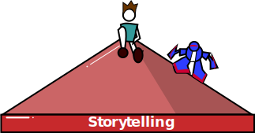
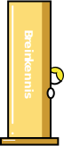
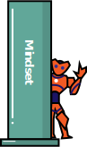
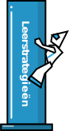

Onze producten
PowerUp You
De kern van de PowerUp Universe producten is het programma PowerUpYou™. Gericht op kinderen van 10 tot 12 jaar, en beschikbaar in particuliere en klassikale vorm.
PowerUpYou™ vormt het hart van onze producten. PowerUpYou™ draait, zoals de naam aangeeft, om jou. Het individu staat bij ons voorop. Of we nu klassikaal, of in kleine particuliere groepen samenkomen, de focus ligt op het kind.
PowerUp Story
Maak kennis met Niko en Rana en ontdek hun wonderlijke wereld. Een wereld waarin technologie en natuur moeiteloos versmolten lijken, maar waarin ook grootse uitdagingen verscholen zijn. Ontdek wat Kanjodol zijn en hoe deze zijn
verbonden
met de kinderen en de mogelijkheden die deze technologie hen biedt.
Waarom?
De 5 Powerpillars

Storytelling
We geloven in de combinatie van storytelling en entertainment, en informatie en kennis.
Het genereren van een emotie, plus kennis, betekent het generen van een lange termijn herinnering.

Breinkennis
Begrijpen hoe de hersenen werken, zodat kinderen inzicht krijgen in hun eigen capaciteiten en potentieel.
Als je begrijpt hoe iets werkt, geloof je het en kun je zien hoe dit relevant en toepasbaar is voor jezelf.

Mindset
Kinderen leren over de overtuigingen ze hebben over leren, intelligentie en het zelfbeeld. En hoe deze invloed hebben op hun ontwikkeling. We onderscheiden 3 mindsets:
- Vaste mindsets
- Groeigerichte mindsets
- Valse mindsets
Mindfulness en Compassie
Het begrijpen en kunnen reguleren van eigen emoties ten behoeve van het leren en de algemene ontwikkeling en weerstand.
Ze leren om milder te zijn naar zichzelf, en een interne vriendschap te creëren. Deze zelfcompassie leidt tot meer compassie naar hun omgeving.

Leerstrategieën
Het begrijpen van de verschillende vaardigheden geeft kinderen de kans om bewuste keuzes te maken hoe zij hun individuele leerproces zo efficiënt en functioneel mogelijk kunnen laten verlopen.